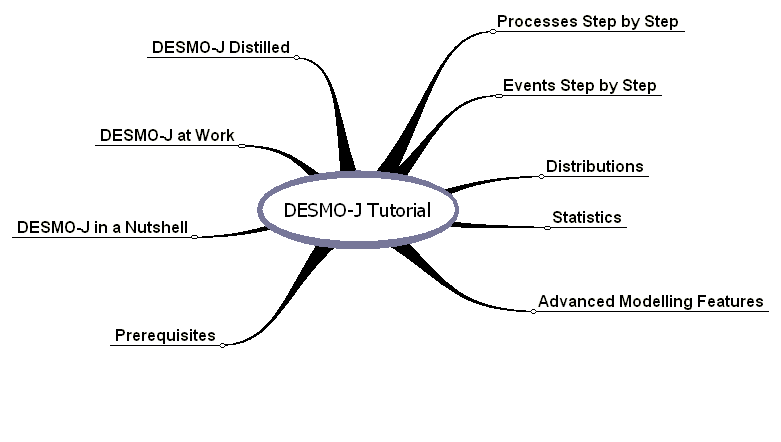

The DESMO-J Tutorial
Overview
Welcome to the DESMO-J Tutorial!
This is the right place to stop by if you want to learn how to use the discrete-event simulation framework DESMO-J. We assume that you are already familiar with object-oriented programming in Java and have a basic understanding of what discrete-event simulation is all about. Please refer to the Prerequisites section for details on what you are supposed to know / have installed on your computer in order to use DESMO-J.
As you can see from the mindmap below the tutorial is organised in separate sections. The ones on the left-hand side deal with using DESMO-J in general, from a brief overview of its functionality (DESMO-J in a Nutshell) to a demonstration of what a simulation with DESMO-J looks like (DESMO-J at Work) to a concise guide to model building with DESMO-J (DESMO-J Distilled). The sections on the right-hand side of the mindmap offer more in-depth introductions to different parts of the framework like its stochastic distributions, statistical data collectors, and advanced modelling features.
DESMO-J supports both the process-oriented and the event-oriented modelling style, also known as process-interaction approach or event-scheduling approach, respectively. The tutorial provides a step-by-step introduction on how to build a model with DESMO-J, following either the process-oriented style or the event-oriented style. Both sections build a model for the same example system to aid you in comparing the two different modelling approaches. We recommend starting with one of these sections if you are looking for a guided tour on model building using DESMO-J.
The tutorial has been completely revised and enhanced for DESMO-J Version 2.2.0 in the context of a research project funded by ELCH (E-Learning Consortium Hamburg)
Enjoy!
The DESMO-J developers team
